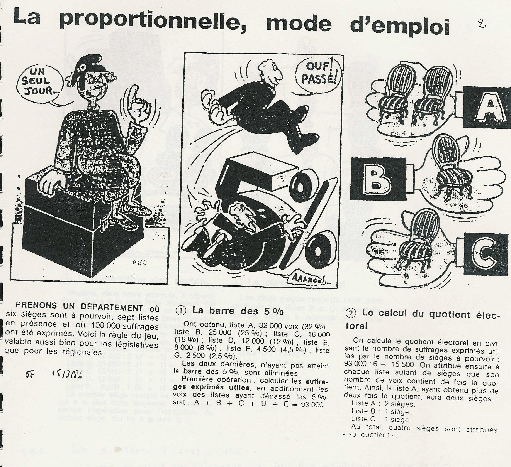
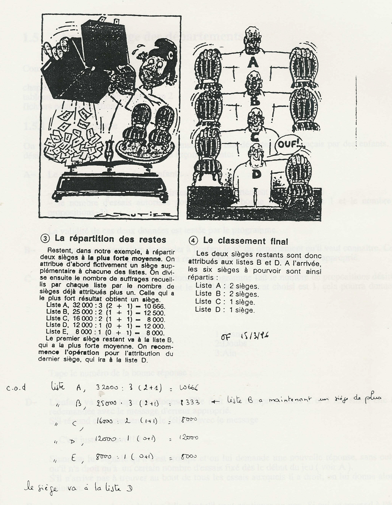
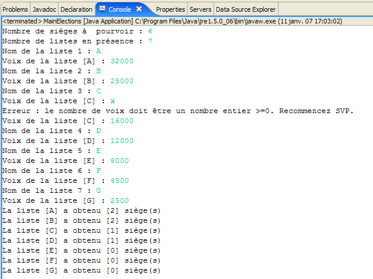

2. [TD] : Le problème
Mots clés : algorithmique, bases de Java : tableaux, E/S, boucles, tests, gestion d'exceptions
Lectures conseillées : chapitre 1 de [ref1] : Les bases du langage Java
2.1. Support
Le dossier [support / chap-02] contient l'algorithme à traduire en C# et Java.
2.2. Le problème à résoudre
On désire écrire un programme qui, au soir d'élections, puisse calculer le nombre de sièges obtenus par les différentes listes en présence. On trouvera un peu plus loin, le mode de calcul des sièges pour une élection proportionnelle à la plus forte moyenne, tel qu'expliqué dans un article du journal Ouest-France du 15 mars 1986.
On écrira une application Java "console", c.a.d. une application utilisant le clavier et l'écran pour communiquer avec l'utilisateur. Elle demandera les renseignements suivants à l'utilisateur (tapés au clavier) :
- nombre de sièges à pourvoir
- nombre de listes en compétition
-
pour chaque liste : son nom, son nombre de voix
Avec ces renseignements, l'application calcule les sièges obtenus par chacune des listes et les affiche à l'écran sous la forme suivante :
-
La liste [X1] a obtenu [N1] sièges
-
La liste [X2] a obtenu [N2] sièges
-
...
où [Xi] est le nom de la liste n° i et [Ni] le nombre de sièges qu'elle a obtenus.
L'article Ouest-France du 15 mars 1986 :


2.3. La solution algorithmique
Une solution algorithmique pourrait être la suivante :
| début-programme
// données
saisieOK : booléen
nbSiègesAPourvoir : entier
nbListes : entier
nomListe[] : chaînes de caractères
voixListe[] : entier
elimineListe[] : booléen
siegesListe[] : entier
moyenneListe[] : réel
i : entier
nbVoixUtiles : entier
quotientElectoral : réel
nbSiègesPourvus : entier
moyenneMax : réel
Max : entier iSiège : entier
// code
// nbre de sièges à pourvoir
saisieOK<-faux
tant que non saisieOK
écrire "Nombre de sièges à pourvoir : "
lire nbSiègesAPourvoir
si nbSiègesAPourvoir n'est pas un entier >0 alors
écrire "Erreur : tapez un nombre entier >0"
sinon
saisieOK<-vrai
finsi
fintantque
// nbre de listes en compétition
saisieOK<-faux
tant que non saisieOK
écrire "Nombre de listes en compétition : "
lire nbListes
si nbListes n'est pas un entier >0 alors
écrire "Erreur : tapez un nombre entier >0"
sinon
saisieOK<-vrai
finsi
fintantque
// dimensionnement des tableaux
dimensionner les tableau nomListe, voixListe, elimineListe, siegesListe, moyenneListe à nbListes éléments
// saisie des noms et voix des listes
totalVoix<-0
pour i variant de 0 à nbListes-1
// saisie du nom de la liste i
saisieOK<-faux
tantque non saisieOK
écrire "Nom de la liste n° ", i, " : "
lire nomListe[i]
si nomListe[i] est vide alors
écrire "Erreur : Tapez un nom non vide"
sinon
saisieOK<-vrai
finsi
fintantque
// saisie du nombre de voix de la liste i
saisieOK<-faux
tantque non saisieOK
écrire "Nombre de voix de la liste ", nomListe[i] , " : "
lire voixListe[i]
si voixListe[i] n'est pas un nombre entier >=0 alors
écrire "Erreur : tapez un nombre entier >=0"
sinon
saisieOK<-vrai
finsi
fintantque
// on incrémente le total des voix
totalVoix<- totalVoix+voixListe[i]79.finpour 80.
// calcul des voix utiles
nbVoixUtiles<-0
pour i variant de 0 à nbListes-1
si (voixListe[i]/totalVoix)<0.05 alors
elimineListe[i]<-vrai
sinon
elimineListe[i]<-faux
nbVoixUtiles<-nbVoixUtiles+voixListe[i]
finsi
finpour
// y-a-t-il des listes non éliminées ?
si nbVoixUtiles=0 alors
écrire "Erreur : toutes les listes ont été éliminées"
arrêt du programme
finsi
// répartition des sièges au quotient
quotientElectoral <- nbVoixUtiles / nbSiègesAPourvoir
nbSiègesPourvus<- 0
pour i variant de 0 à nbListes-1
si non elimineListe[i] alors
siegesListe[i]<- partie entière de (voixListe[i]/quotientElectoral)
moyenneListe[i] <- voixListe[i] / (siegesListe[i]+1)
nbSiègesPourvus<-nbSiègesPourvus+siegesListe[i]
sinon
siegesListe[i]<-0
finsi
finpour
// répartition des sièges restants à la plus forte moyenne
// 1 siège est attribué à chaque tour de boucle
pour iSiège variant de 0 à nbSiègesAPourvoir - nbSiègesPourvus - 1
// recherche de la liste ayant la + forte moyenne
moyenneMax<- (-1)
pour i variant de 0 à nbListes-1
si non elimineListe[i] alors
si moyenneListe[i] > moyenneMax alors
moyenneMax <- moyenneListe[i]
iMax <- i
finsi
finsi
finpour
// on attribue 1 siège à la liste de + forte moyenne
siegeListe[iMax] <- siegeListe[iMax]+1
// et on change sa moyenne
moyenneListe[iMax] <- voixListe[iMax]/(siegeListe[iMax]+1)
finpour
// affichage résultats sans tri
pour i variant de 0 à nbListes-1
si elimineListe[i] alors
écrire "La liste ", nomListe[i], " a été éliminée"
sinon
écrire "La liste ", nomListe[i], " a obtenu ",
siegesListe[i], " siège(s)"
finsi
finpour
fin-programme
|
2.4. Travail à faire
Q1 : traduire l'algorithme en C#. Le mettre en oeuvre avec Visual Studio.
Q2 : traduire l'algorithme en Java en vous inspirant du code C#. Mettre en oeuvre le programme Java dans un environnement Eclipse analogue au suivant :
- [1] : le projet s'appelle [elections-01]
- [2] : l'application sera placée dans un paquetage, ici [istia.st.elections]
- [3] : [MainElections.java] est le code source de l'application écrite dans la partie précédente
- [4] : la classe [MainElections] est exécutée
Un exemple d'exécution pourrait être le suivant :
